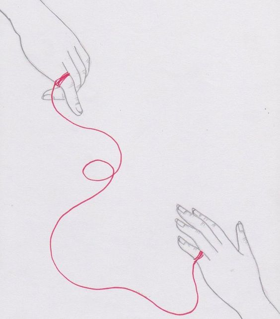

EL Hilo Rojo
El hilo rojo es una antigua leyenda oriental que habla sobre aquellas personas que están destinadas a convertirse en almas gemelas... según cuenta la leyenda, todxs estamos conectados a alguien, nace de nosotrxs un hilo de color rojo invisible a la vista humana, el cual se puede estirar, tensar o enredar pero nunca romper. No importa cuánto tiempo pase, al final se encontrarán yconoceremos a esa persona que está al otro lado del hilo y la amaremos profundamente.
Hace un tiempo escuche esta leyeda pero no le tome tanta importancia. Tiempo despues pense en nosostros me di cuenta el parecido entre como nos fuimos enamorando, nosotros ya sabiamos del uno y del otro estabamos ahi,hablamos no tan seguido pero si hablamos,sabiamos que queriamos, nos conociamos. pero hasta el momento correcto nos enamoramos y formamos esta hermosa relación que tenemos usted y yo. Muchas gracias por todo miamor, por amarme tanto apoyarme estar para mi siempre,ser tu conmigo,amame siempre miamor pliss... Mi señorito precioso no sabes cuanto te amo,te amo,te amo miamor que nunca se te olvide mi niño chiquito no sabes lo orgullosa que estoy de ti miamor, estoy muy orgullosa de ti, eres el niño mas inteligente capaz que conozco, diosmio miamor eres perfecto Guapo,Inteligente,detallista,lindo,amable,Precioso, Te admiro demasiado mi niño lindo ♥
Eres el mejor novio,esposo y se que en un futuro seras el mejor papá del mundo, diosmio me encantas. Te mereces el mundo entero, te mereces todo lo bonito de mundo,todas las canciones bonitas,todaas las formas de amar te mereces todo miamor y sabes que yo te lo quiero dar todo todo lo que tu te mereces ♥
